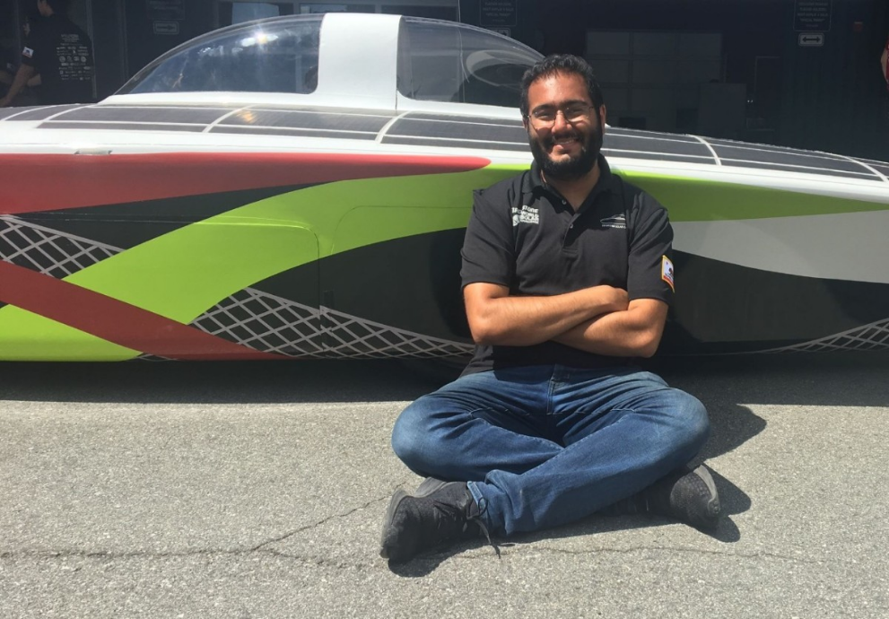

Education
I studied mechanical engineering at Stanford University, completing both my Bachelor's and Master's Degrees in January 2023. I deeply enjoy working on controls, automation, mechatronics, and other electromechanical projects. I chose to conduct my undergraduate concentration in control systems and fulfilled a graduate depth in mechatronics. Through my coursework and class projects, I've accumulated skills in C, MATLAB, Python, ROS, PIC32 chips, finite state machines, soldering, basic electronics, general mechatronics, vehicle control systems, soft robotics, and haptic feedback programming.
I am currently enrolled in one semester of additional coursework at City College of San Francisco, in order to acquire further skills in Revit BIM (both structural and MEP) and industrial electronics / programmable logic controllers.
Professional and Student Projects
As a relatively recent mechanical engineering M.S. graduate, my career includes both my time in industry and my student and internship projects. An accounting of my notable engineering projects dating back to 2020 can be found in reverse chronological order on the "Portfolio" tab of this website. I am always happy to answer questions about my work!

Professional and Student Projects
As a relatively recent mechanical engineering M.S. graduate, my career includes both my time in industry and my student and internship projects. An accounting of my notable engineering projects dating back to 2020 can be found in reverse chronological order on the "Portfolio" tab of this website. I am always happy to answer questions about my work!